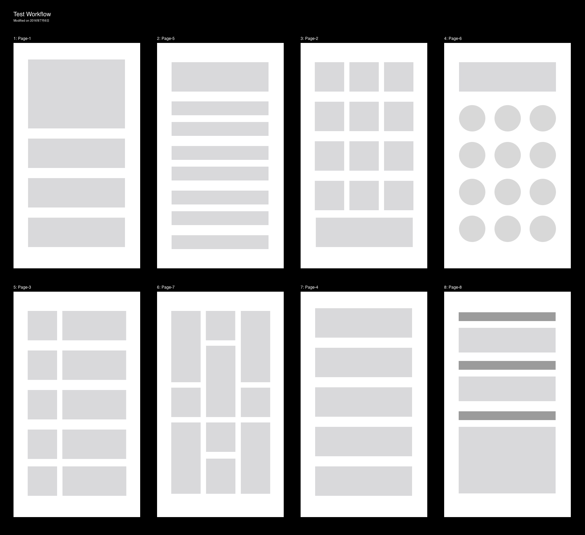
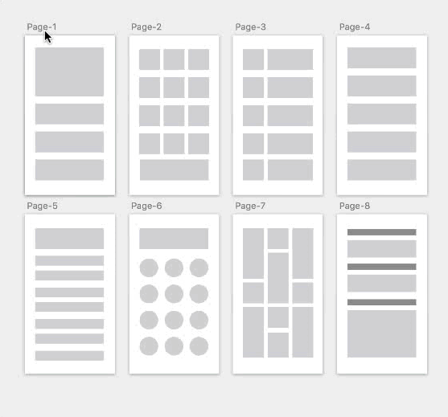
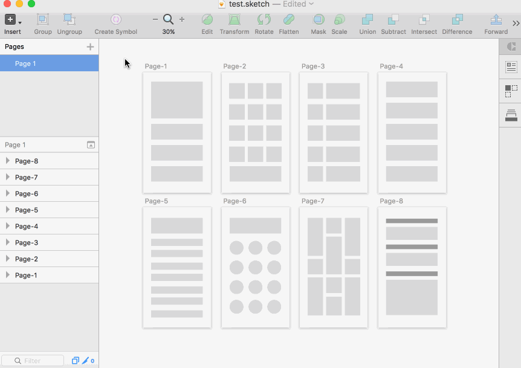

设计师在完成设计工作的时候通常都会有设计评审这一过程，设计评审的载体可以是一个幻灯片，可以是一个可交互文档，当然也可以直接用源文件。
我在设计稿评审的时候会喜欢用一张大图（我称它为设计板）来演示，这个设计板上会包含产品核心流程的效果图。这样做的好处是可以让观看者在一开始对设计稿有一个通览，对设计稿也可以有一定的预期；同时设计师在展示的时候也可以高效率的切换不同界面，便于评审的时候反复回顾。

导出设计板
这里分享两个在 Sketch 中快速导出设计板的两个方法：
1. User Flow 插件
这是一个通过 Sketch 画板快速标记用户操作路径的插件。但同时它也可以快速生成设计板，还带有画板标题。
方法就是选中要导出的画板，然后按下快捷键 control + shift + f即可。

下载地址：User Flow
2. Sketch 背景切片
这个方法要更简单一些，在要导出的画板底部放置一个背景，对该背景使用切片工具就可以导出一张大的设计板了。
不过相较于 User Flow 插件，这个就无法导出画板名称了，而且当视图内画板较多时，软件也会出现比较严重的卡顿现象。

最后再说一下画板的背景的选择，通常为了突出设计稿，最好让背景和设计稿的对比强烈一些。比如有些设计稿的色调是浅色的，就需要深色；反则深色设计稿就要浅色背景。